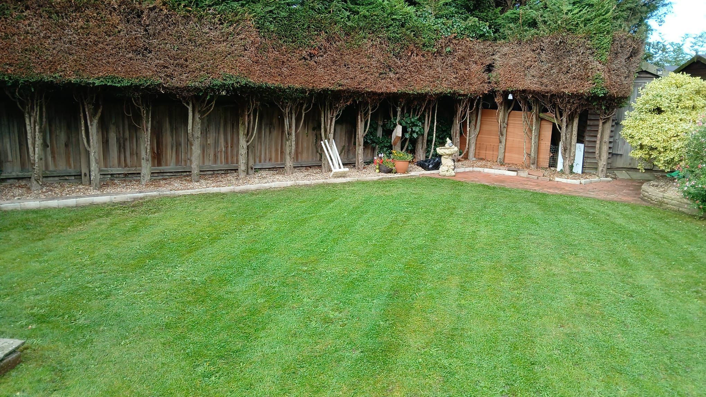

Lawn mowing & grass care
Regular mowing, edging and grass cutting for front lawns, rear gardens and larger grass areas across Stowmarket.
Learn about lawn mowing →
Need a reliable gardener in Stowmarket? Gain Green Gardens provides lawn mowing, hedge cutting, pruning, weed control, turf laying, garden tidy ups and clearances for homes across Stowmarket, Combs Ford, Needham Market, Onehouse and nearby Suffolk villages.
Gain Green Gardens provides friendly, practical gardening services in Stowmarket for homeowners who want a neat garden without losing their weekends to mowing, weeding and cutting back. We can help with lawn mowing, hedge cutting, pruning, weeding, turf laying, garden clearances and regular garden maintenance.
Gardens around Stowmarket can quickly become difficult to keep on top of during the growing season, especially where lawns, boundary hedges, gravel areas, patios and borders all need attention. Whether you need regular grass cutting, a hedge brought back into shape or a full tidy after the garden has become overgrown, we work carefully and leave the space clean and easier to manage.
Book a one-off visit when your garden needs a proper reset, or arrange regular visits to keep lawns, hedges, paths and borders maintained throughout the year.
One-off garden tidy ups and regular maintenance for lawns, hedges, borders, patios, driveways and outdoor spaces across Stowmarket.
Regular mowing, edging and grass cutting for front lawns, rear gardens and larger grass areas across Stowmarket.
Learn about lawn mowing →Clean hedge trimming for front boundaries, side hedges, shrubs and garden edges that need a sharper, tidier shape.
Learn about hedge cutting →One-off tidy ups for gardens that need cutting back, clearing through, sweeping and making easier to manage again.
Learn about garden clearances →Weeding and weed control for beds, borders, gravel, patios, paths and driveways around the home.
Learn about weed control →Seasonal pruning and shaping for shrubs, plants, small trees and established growth around lawns, fences and borders.
Learn about pruning →Fresh turf and lawn renewal for worn, patchy or damaged grass areas that need a cleaner, healthier finish.
Learn about turf laying →From fast spring growth and summer lawn care to autumn cutting back and winter pruning, we help keep Stowmarket gardens neat, healthy and manageable all year round.
First lawn cuts, edge tidying, weeding, pruning and getting beds and lawns ready for stronger growth.
Regular mowing, hedge trimming, weed control and keeping outdoor spaces ready for children, pets, family and visitors.
Leaf clearing, cutting back, end-of-season tidy ups and preparing the garden before winter weather sets in.
Pruning, clearances, small tree work and practical garden jobs while growth is slower.
Getting a gardening quote in Stowmarket is simple: tell us what needs doing, arrange a free visit and we’ll give you a clear price before work begins.
Tell us what you need help with and where you are in Stowmarket or a nearby village.
We view the garden, check access, discuss waste removal and look at the work involved.
You receive a straightforward quote before any work begins.
We complete the job neatly and take away garden waste where agreed.
Alongside Stowmarket, we cover Combs Ford, Needham Market, Onehouse, Great Finborough, Haughley, Buxhall and nearby Suffolk villages.
We provide gardening services across Stowmarket and nearby areas including Combs Ford, Needham Market, Onehouse, Great Finborough, Haughley and surrounding Suffolk villages. Use the map to view the local area we cover for lawn mowing, hedge cutting, pruning, weed control, turf laying, garden tidy ups and clearances.
Answers to common questions about lawn mowing, hedge cutting, garden tidy ups and garden waste removal in Stowmarket.
Yes. Gain Green Gardens provides lawn mowing, hedge cutting, pruning, turf laying, weed control, garden tidy ups and garden clearances in Stowmarket, Combs Ford, Needham Market and nearby Suffolk areas.
Yes. We can arrange regular lawn mowing and grass care in Stowmarket, including edging and general lawn tidying during the growing season.
Yes. One-off garden tidy ups are available for overgrown gardens, seasonal resets, pre-sale tidy ups and outdoor spaces that need bringing back under control.
Yes. Garden waste from lawn mowing, hedge cutting, pruning and garden clearances can be removed and disposed of responsibly unless you would prefer to keep it for composting.
Call 07835 897102, send a WhatsApp message or email esdaille77@yahoo.com. Tell us what your garden needs and we’ll arrange a free visit for your Stowmarket garden.
Call, email or send a WhatsApp message to arrange a free quote for lawn mowing, hedge cutting, pruning, turfing, weed control, garden tidy ups or clearances in Stowmarket.